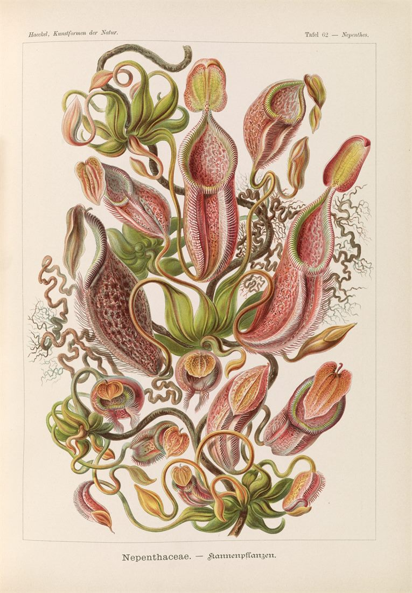
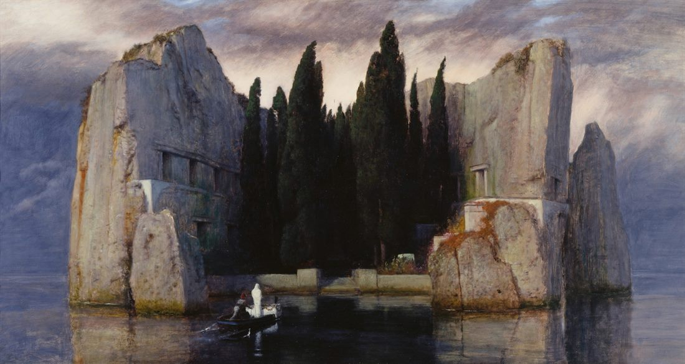
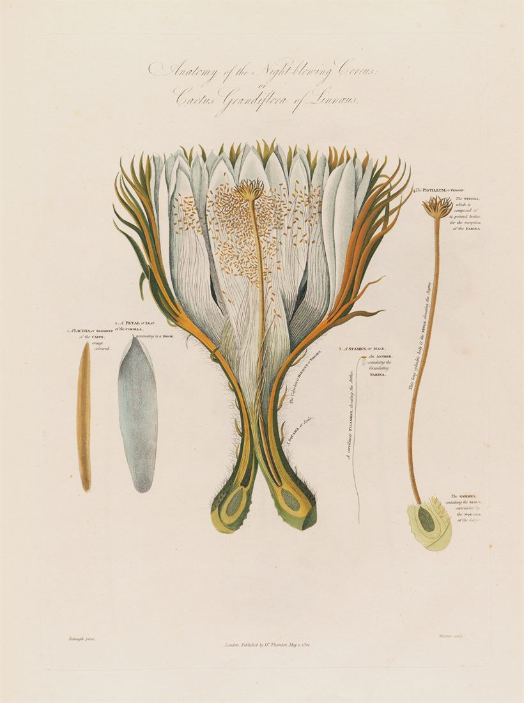

About Daniel Wirth
Meet Daniel

Daniel, by the numbers
Daniel Wirth believes the poems worth keeping are the ones you never got to fix — the first draft, written in the dark, before you knew better than to say it plainly.
He grew up in Rheine, a small town in Germany, in the 1990s, and now lives in the mountains of New Mexico, in a stretch of forest that doesn’t ask questions. By day he works as a research technologist; by night he is a writer and, according to the dogs, a forest dweller — in that order.
He reads poetry, science fiction, eco-fantasy, and nonfiction, roughly in that order of danger to his own drafts. He once read The Library at Mount Char halfway through a novel, decided he could no longer stand his own prose, and rewrote the whole book to be “more mysterious.” That manuscript now lives where mysterious things go. The poems, he kept.
Poetry did the repair work when he needed it — the kind a person has to do himself. He has been broken in half twice, both times literally: two broken spines, no wheelchair either round, and each recovery happened partly on the page. He wakes at 4:47 out of a habit the army set and never came back for, writes sitting on the ground because a chair has yet to improve a line, and is, by his own account, bad at most things and does them anyway.
His first collection, Unfiltered Thoughts of a Broken Soul (2025), keeps its poems exactly as first written — no revisions, no second takes. His second, Tough Men Don’t Cry (2026), is the seventy-five that survived out of four hundred. Two novels are in progress: Disposal Unit, military sci-fi horror, and Worlds Beneath Roots, eco-fantasy. All of it is for the same reader — the one who kept moving while everyone assumed they were fine.
Connect on social
Want more from Daniel?
New poems and the occasional note go out through his Substack a few times a year. Between books, the Notebook on this site is where the characters, cut fragments, and worldbuilding for the novels pile up.
Read the Notebook →Follow on Substack →

Still not enough Daniel?
He reads at events, joins panels, and turns up at festivals — and will travel for the right one. Short and long bios, a headshot, and a one-sheet are available for press and editors on request.
Get in touch →
One poem a month
The newsletter runs on Substack: a new poem at the start of each month, and a few notes a year. Enter an address and confirm on the next page.
